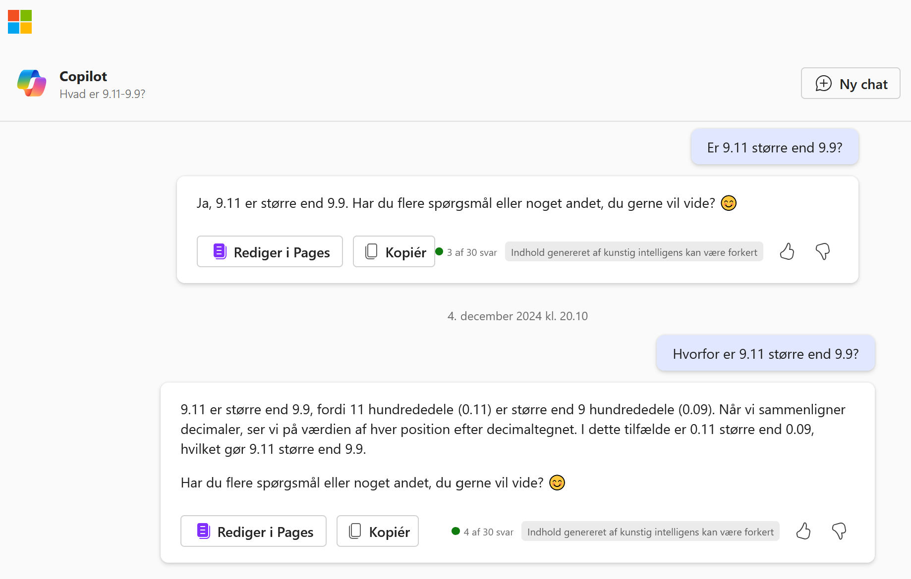
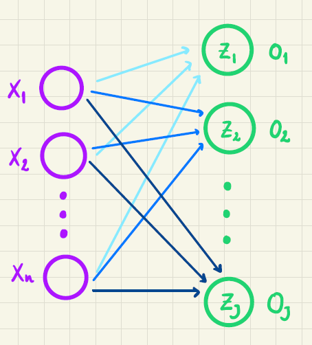
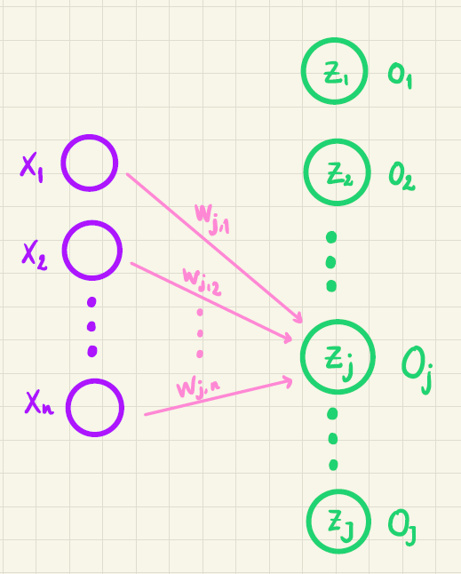
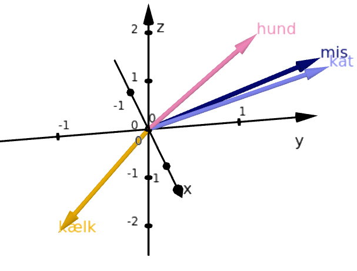
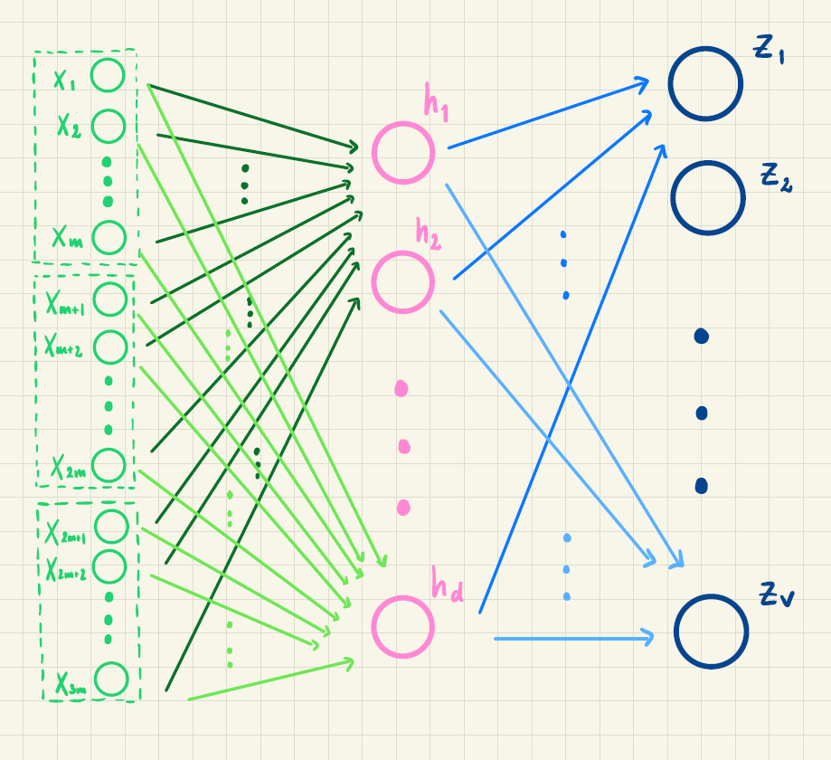

| ord1 | ord2 | ord3 | output |
|---|---|---|---|
| Anne | har | en | ko |
| har | en | ko | . |
| en | ko | . | Ole |
| ko | . | Ole | får |
| . | Ole | får | et |
| Ole | får | et | grønt |
| får | et | grønt | æsel |
| et | grønt | æsel | . |

Generativ AI virker ved at bygge sætninger op et ord ad gangen, hvor hvert ord vælges på baggrund af de foregående ord.
Hvad kunne næste ord være i følgende sætning?
"Jeg går en tur i —"
Vi har brug for en funktion der kan give betingede sandsynligheder i stil med:
| Næste ord | Sandsynlighed |
|---|---|
| skoven | \(0.385\) |
| byen | \(0.326\) |
| \(\vdots\) | \(\vdots\) |
| guitar | \(0.001\) |
Anne har en ko.
Ole får et grønt æsel.
Anne ser et marsvin.
Kim har en grøn cykel.
Mia og Bo får en blå bil.
Mia og Bo har en blå cykel.
Denne “børnebog” med 1247 sætninger (8510 ord) bruger kun 27 forskellige “ord” (her tæller “.” også som et ord):
artikel: en, et
bindeord: og
dyr: æsel, hest, ko, marsvin
farve: blå, blåt, grøn, grønt
person: Anne, Bo, Eva, Ib, Ida, Kim, Mia, Ole
tegnsætning: .
ting: bil, cykel, hus, skur
verbum: får, har, ser
| ord1 | ord2 | ord3 | output |
|---|---|---|---|
| Anne | har | en | ko |
| har | en | ko | . |
| en | ko | . | Ole |
| ko | . | Ole | får |
| . | Ole | får | et |
| Ole | får | et | grønt |
| får | et | grønt | æsel |
| et | grønt | æsel | . |

Et neuralt netværk skal have tal at arbejde med, så vi prøver at repræsentere hvert ord med 1, 2, 3, osv. (dårlig ide):
| ord1 | ord2 | ord3 | output |
|---|---|---|---|
| Anne | har | en | ko |
| har | en | ko | . |
| en | ko | . | Ole |
| ko | . | Ole | får |
| . | Ole | får | et |
| Ole | får | et | grønt |
| ord1 | ord2 | ord3 | output |
|---|---|---|---|
| 3 | 15 | 9 | ko |
| 15 | 9 | 21 | . |
| 9 | 21 | 1 | Ole |
| 21 | 1 | 25 | får |
| 1 | 25 | 12 | et |
| 25 | 12 | 10 | grønt |

\[ z_j = w_{j,0} + w_{j,1} \cdot x_1 \cdots + w_{j,n} \cdot x_n \]
\[ o_j = \alpha(z_1, \dots, z_J) = \frac{\mathrm{e}^{z_j}}{\sum_{i=1}^J \mathrm{e}^{z_i}} \] \[ j = 1, \dots, J \]
For hvert eksempel af træningsdata kender vi target-ordet, hvilket kodes som en sandsynlighedsvektor med al sandsynlighed på det kendte ord (også kaldet one-hot encoding af ordet).
| ord | Anne | Ole | |
|---|---|---|---|
| 4 | bil | 1.4 | 3.6 |
| 5 | blå | 1.8 | 4.2 |
| 8 | cykel | 1.4 | 3.6 |
| 13 | grøn | 1.6 | 4.5 |
| 16 | hest | 1.3 | 3.8 |
| 21 | ko | 1.7 | 3.1 |
Betydningen af et ord er bestemt af den kontekst, ordet indgår i.
"Min — har spist af sin madskål"
og
"Sikken en blød pels, din — har"
"Den lille — har hvide knurhår"

Hvert ord \(w\) repræsenteres af to vektorer: \(\vec{v}_{w}\) og \(\vec{k}_{w}\)
Hvis \(w\) ofte har \(c\) som kontekst, så skal \(\vec{v}_{w}\cdot \vec{k}_{c}\) være stort.
Omvendt indikerer en meget negativ værdi af \(\vec{v}_{w}\cdot \vec{k}_{c}\), at \(w\) sjældent har \(c\) som kontekst.
Sandsynlighedsmodel: \[ \begin{aligned} P(\text{kontekst = ord}_i\mid \text{fokus = }w) = \frac{\mathrm{e}^{\vec{v}_{w}\cdot \vec{k}_{\text{ord}_i}}}{\mathrm{e}^{\vec{v}_{w}\cdot \vec{k}_{\text{ord}_1}} + \dotsm + \mathrm{e}^{\vec{v}_{w}\cdot \vec{k}_{\text{ord}_V}}} \end{aligned} \]
| Fokus | Kontekst |
|---|---|
| \(w^{(1)}\) | \(c^{(1)}\) |
| \(w^{(2)}\) | \(c^{(2)}\) |
| \(w^{(3)}\) | \(c^{(3)}\) |
| \(\vdots\) | \(\vdots\) |
| \(w^{(j)}\) | \(c^{(j)}\) |
| \(\vdots\) | \(\vdots\) |
| \(w^{(M)}\) | \(c^{(M)}\) |
Den sorte hund logrer med halen
| Fokus-ord | Kontekst-ord |
|---|---|
| \(\vdots\) | \(\vdots\) |
| sorte | |
| sorte | Den |
| sorte | hund |
| sorte | logrer |
| hund | Den |
| hund | sorte |
| hund | logrer |
| hund | med |
| logrer | sorte |
| \(\vdots\) | \(\vdots\) |

Figur 1: Kunstigt neuralt netværk som kan bruges til tekstgenerering.